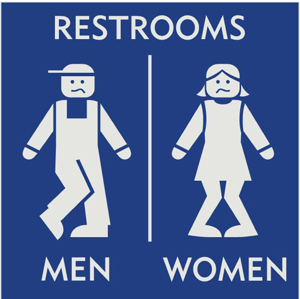

Drupal
Global Training Day 2014.
© 2010-2014. Kuszing János, Palócz István
Összefoglaló
- Közreműködők
- Oktatási körülmények áttekintése.
- Felhasználás.
- Hivatkozások külső forrásokra.
- Gyakorlat.
Közreműködők
A stáb
Oktatási körülmények áttekintése
Mai nap:
- 15 perces szünetek.
- 3/4 óra ebédszünet.
Mi, hol található


Általános használati feltételek
- Felhasznált anyagok forrásai megjelöltek.
Tananyag
- Alapfogalmak.
- Drupal telepítése.
- Drupal alapok.
- Alaprendszer bővítése külsős modulokkal.